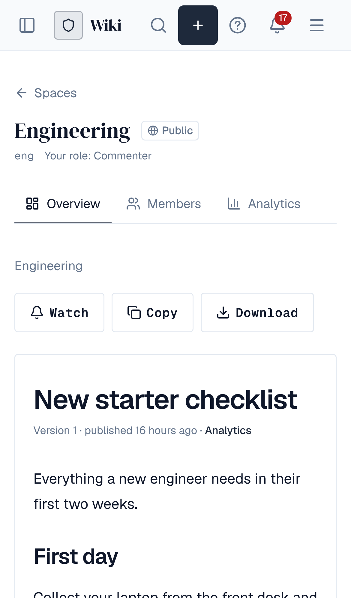
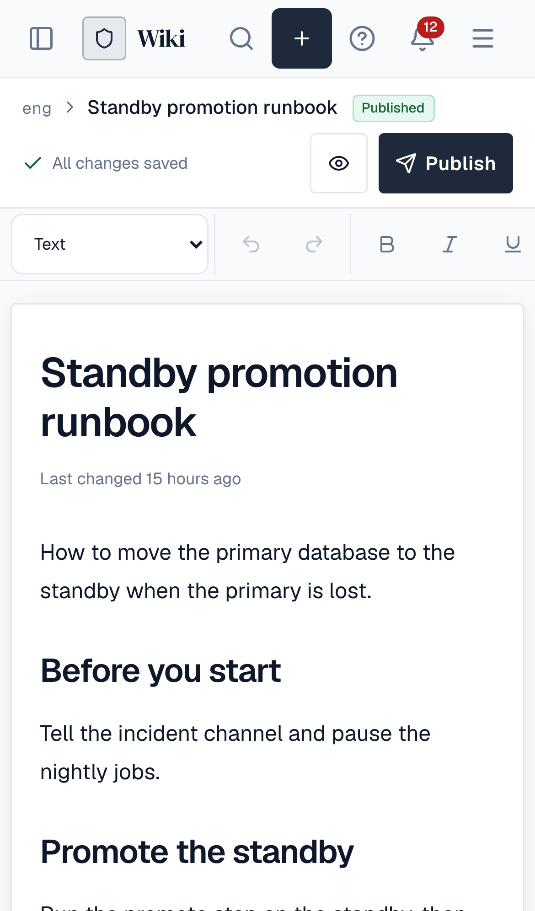
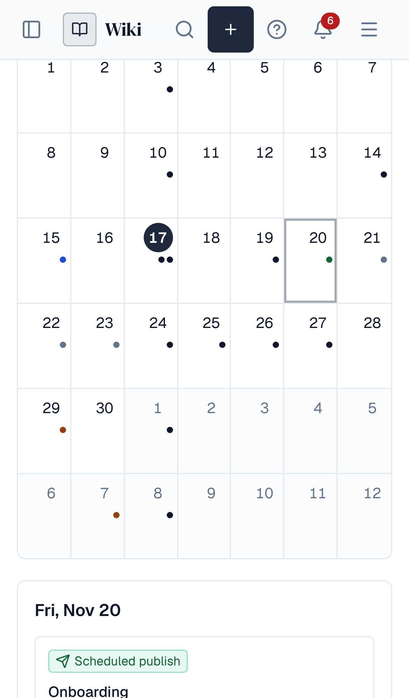
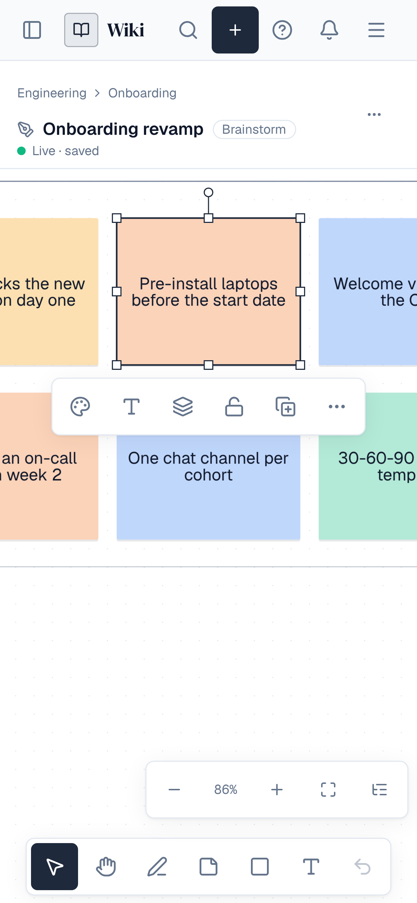

1. Overview
The Wiki works in the browser on a phone: nothing to install. Every screen fits the width of the phone, and buttons and links are large enough to tap.

- The left menu opens from the menu button in the header.
- Rows in lists and tables (spaces, analytics, content health) open wherever you tap them.
- Wide tables in a page scroll sideways inside the page.
- Videos play in the phone's own player.
2. Editing
People who edit a page can edit it on a phone, together with others, as on a computer. The formatting toolbar scrolls sideways, and Page details (status, reviews, plans, versions, comments) is under the page instead of beside it.

If the connection drops on the move, keep the tab open: your changes are saved when it returns. See Editing together.
3. Calendar and Q&A
On a phone the month view marks each day's entries with dots, and the whole day is the button: tap it to see that day's entries under the calendar. The agenda view lists the next 30 days. Q&A works in full: ask, answer, vote and comment.

4. Whiteboards
On a phone a whiteboard keeps seven tools at the bottom (select, hand, pen, sticky note, shape, text and undo), and comments, history and facilitation are in the ⋯ menu. Pinch to zoom, add and edit notes and draw with your finger. Items on this whiteboard opens as a sheet from the bottom.

On tablets, controls use their compact desktop size. Plugin screens that need a large screen say so on a phone.